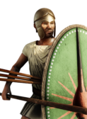
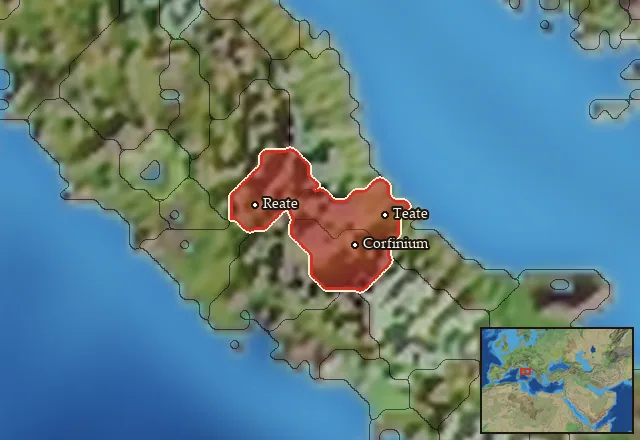

Sabellian Spearmen


Class: spearmen · Category: infantry · Men per unit: 40
Description
These Sabellian Spearmen represent the warlike tribes of the central Apennine mountains. As their name implies, these men rely on spears to attack from both at range and up close. They come from fairly impoverished areas, so have only been able to afford thureos shields and the occasional bronze Samnite-Attic helmet to protect themselves. Otherwise, they must generally rely on ambush tactics or forming a shield wall to stand a chance against heavier-equipped enemy infantry.
Historical background
The terms Sabines or Sabellus to refer to certain groups of Oscan speakers were a Roman invention. During the Social War, it is thought that Varro (L.L 7 28) created a connection between Sabines and the Samnites, a term generally used to highlight their opposition to Rome and which could be employed in a derogatory way. However, while ‘Sabines’ was a negative and more specific term, Sabellus [singular] and Sabelli [plural] were more friendly and all-encompassing terms for any of the other neighbouring Oscan peoples who were not engaged in hostilities with Rome (Salmon, Samnium and the Samnites (1967), p. 32). Strabo (5.3) also followed with this use of Sabine: “THE Sabini occupy a narrow country, its length from the Tiber and the small city of Nomentum to the Vestini being 1,000 stadia. They have but few cities, and these have suffered severely in their continual wars [with the Romans]”, while also noting their shared ancestry as “Autochthones” or Italic aboriginals along with other Oscan peoples: “The Picentini and Samnitae descend from them, as do the Leucani from these latter, and the Bruttii again from these”.
The Oscan speaking people of the fourth century BC had a variety of names attributed to them by others. Strabo (vi.286; v 1.285) calls them Apuli, although Horace (Sat. 1.5.77; n.1.38) and Roman writers use this term for people who lived in the area of Apulia rather than to refer to a specific culture or group. When living in northern Apulia, the Oscans were referred to as the Sabelli, and it is likely their presence in the area which forced other peoples to fortify cities such as Manduria due to the increase in recorded military activity there (Salmon, ‘The Iron Age: The Peoples of Italy’, in: The Cambridge Ancient History IV (1988), p. 690). The Sabellians were known to have used a written language derived from Etruscan known as paleo-Sabellian and south-Picene from the end of the seventh century BC (Farney et al., The Peoples of Ancient Italy (2017), p. 66).
These Oscans of the central Apennines were supposedly a society organised around tribal units, with most of their population living in villages rather than in cities, which was becoming increasingly common elsewhere. Furthermore, most of what we know about their social organisation comes from epigraphic evidence found in rural sanctuaries (Farkas, Leadership among the Samnites and related Oscan-speaking Peoples (2006), p. 11). Livy (9.13.7) also mentions the Appenine Samnites/Sabellians in standard Greek literary form as troglodyte mountain dwellers who “dwelt on the mountains in separate villages, used to ravage the low lands, and the places on the coast; and being mountaineers, and savage themselves”.
Sabellian Spearmen are another generally representative group, whose equipment in RIS highlights what the average Apennine tribal warrior might have had access to. Bearing in mind that this area was not particularly wealthy and its inhabitants made a living mostly from transhumance or raiding wherever possible, the average spearman would have used what was affordable and available. Samnites were not much noted for burying their dead with shields, swords, or helmets, as they had to import iron, so we often rely on their depictions in Sabellian tomb-paintings and South Italian vases that display fighting men (Salmon (1967), p. 108). A wall painting from a 4th century BC Samnite tomb, now held in the Provincial Museum of Campania, Capua, gives a colourful rendition of a spearman holding a thureos shield and spear, whilst wearing a light tunic and bronze helmet, that serves as this unit’s inspiration.
Stats
| Rank in roster | ||
|---|---|---|
| Men per unit | 40 | ███······· 30% |
| Attack | 15 | ███████··· 74% |
| Charge bonus | 9 | ███······· 28% |
| Defence | 32 | █████····· 49% |
| · armour | 2 | █········· 13% |
| · defence skill | 26 | ████████·· 79% |
| · shield | 4 | █████····· 48% |
| Morale | 11 | ████······ 39% |
| Discipline | Normal | |
| Training | Trained | |
| Recruitment cost | 1,480 dn | ██········ 16% |
| Upkeep per turn | 540 dn | ███······· 25% |
| Turns to recruit | 2 |
Weapons
| Primary | Secondary | Primary | Secondary | Primary | Secondary | Primary | Secondary | ||||
|---|---|---|---|---|---|---|---|---|---|---|---|
| Attack | 15 | 11 | Type | thrown · blade | melee · blade | Projectile | javelin | — | Ammunition | 2 | — |
| Charge bonus | 9 | 9 | Damage | piercing | piercing | Range | 50 | — | Properties | Used just before charging into combat | Light spear (braced against cavalry charges from the front) · +8 attack against cavalry |
Defence
| Primary | Secondary | Primary | Secondary | Primary | Secondary | Primary | Secondary | ||||
|---|---|---|---|---|---|---|---|---|---|---|---|
| Total | 32 | — | Armour | 2 | — | Defence skill | 26 | — | Shield | 4 | — |
Condition and terrain
| Hit points | 1 | Ground: scrub / sand / forest / snow | -1 / 0 / -4 / 0 | Charge distance | 30 | Formations | Square |
Technical stats
| Time between blows (primary / secondary) | 2.5 s / 2.5 s | Collision mass per man (1.0 is normal) | 0.91 | Spacing between men: close / loose | 1 × 1.2 m / 2 × 2.4 m | Default ranks | 5 |
| Extra fatigue in hot climates | 0 |
In battle: Can sap · Good stamina
Who can recruit it
No faction has this on its core roster: it can be raised only in the provinces below.
Any faction holding one of the provinces below can field it.
Exactly what a settlement must have, route by route (1)
| For | Building | Also requires | |||||||||
|---|---|---|---|---|---|---|---|---|---|---|---|
| Every faction | Any settlement | Garrison Building or Tier 1 Military Industrial Complex · Sabellian area of recruitment · Any Government (Dependency, Indirect Rule or Direct Rule) · Tier 2 Colony not built |
Areas of recruitment

| Zone | Provinces | ||||||
|---|---|---|---|---|---|---|---|
| Sabellian | 3 |